The Wicked Wallop
Building a landing page of a timeline of events for The Wicked Wallop.
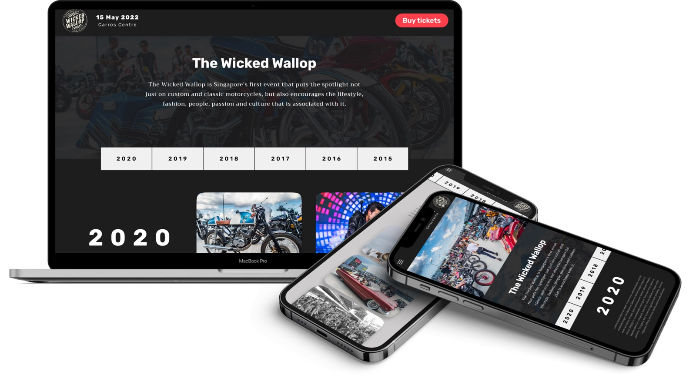
What is The Wicked Wallop?
The Wicked Wallop is Singapore’s first custom and classic motorcycle show, with a focus on lifestyle, custom culture, music and people. I was tasked to create a simple landing page to showcase past events from 2015.
Project goals
This project aimed to create a visually engaging and user-friendly landing page to showcase a timeline of all past events. This landing page is mainly for visitors who want a one-stop spot to dive into the event's history and get a full picture of The Wicked Wallop's journey. Additionally, the landing page should facilitate ticket purchases for the 2022 event.
Identifying existing timeline designs
In the initial stages of this project, I embarked on a research journey to explore the landscape of timeline designs. As a newcomer to timeline design, I sought inspiration from various sources like concert lineups from events such as the Singapore GP and music festivals. Additionally, drawing from my passion for motorcycles, I delved into the timelines of iconic motorcycle brands with rich histories. Here are some references I found:
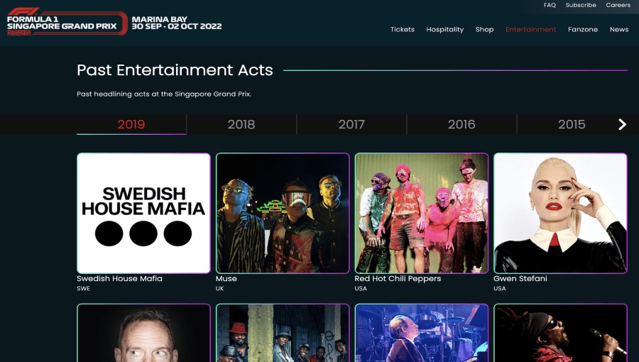
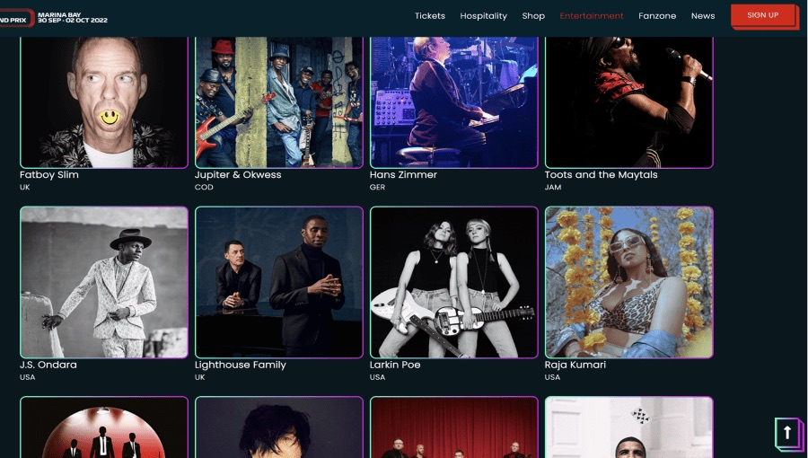
Singapore GP
A timeline of past headlining acts at the Singapore GP is featured in a horizontal way, with navigational arrows to scroll to previous years. Headliners are featured in a grid view with artist photos and names.
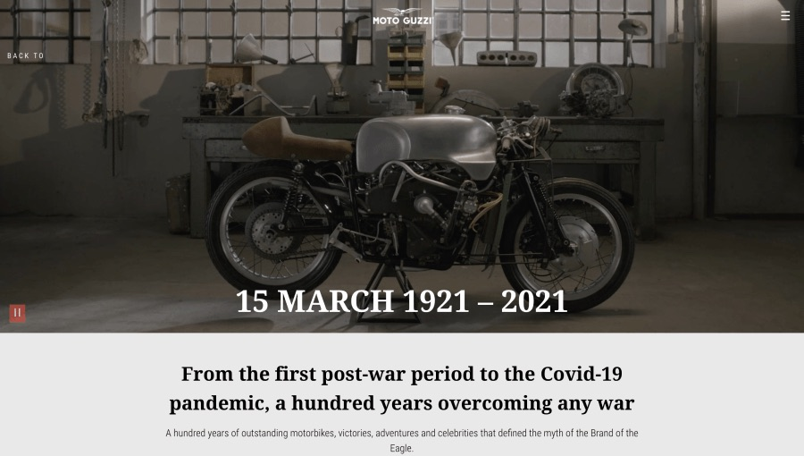
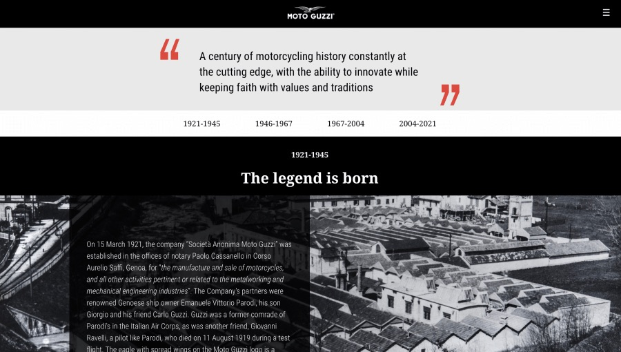
Moto Guzzi
A timeline through Moto Guzzi’s 100 years. A video starts playing as the hero header of the page. The main section includes a summary and quote describing the brand. Anchor links provide quick navigation to featured time periods.
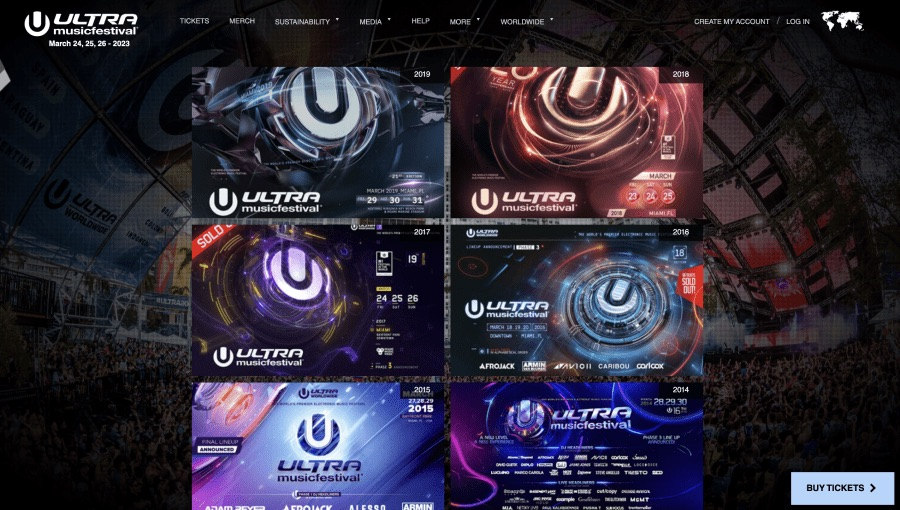
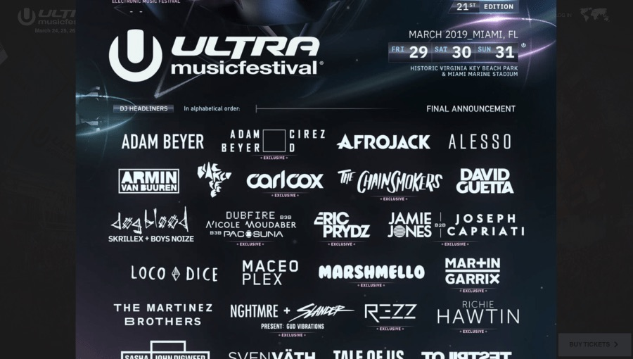
Ultra Music Festival
Past events are displayed in a list format, with each year indicated on the top right of each image. Clicking into each event opens up a full-sized poster of the event which can be viewed in full-screen mode or downloaded.
Extracting best practices and learning from others' mistakes
I noticed some common features across the above reference sites:
- Prominent CTA to register or buy tickets. The placement of this CTA is usually fixed on a corner of the website to emphasize it as the main call of action. This makes it easier for users to sign up for the event.
- Dates of upcoming event is displayed at top left of page, usually next to, or below the organisation’s logo. This appears to be key information for users planning to attend an event.
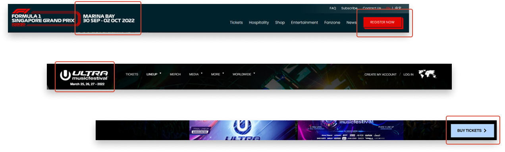
When exploring competitor timelines, I observed that some of them lacked an intuitive navigation method for accessing events across the timeline.
- For instance, in the case of Ultra, users had to scroll downwards from 2019 to reach events from 1999, which can be frustrating.
- On the other hand, I found the fixed anchoring links in Moto Guzzi's website to be more user-friendly. This approach would enable visitors to effortlessly navigate and browse through The Wicked Wallop's events across different points in time.
Wireframes
In the wireframes, I designed a fixed top navigation menu that prominently featured the upcoming 2022 event date and a CTA for ticket purchases. I used a featured image layout to draw the user's attention to a single, captivating image or video that occupies the entire page, and provide them with a preview of The Wicked Wallop's essence.
In the next section, I incorporated a concise "About" section to provide clarity on The Wicked Wallop's identity and purpose. Following this, I designed a chronological timeline of past events, with each year prominently displayed in a large, bold font to serve as a timeline marker. To enhance user navigation through different years, I also integrated a fixed anchoring menu that remains accessible while scrolling, ensuring seamless exploration of the historical events.
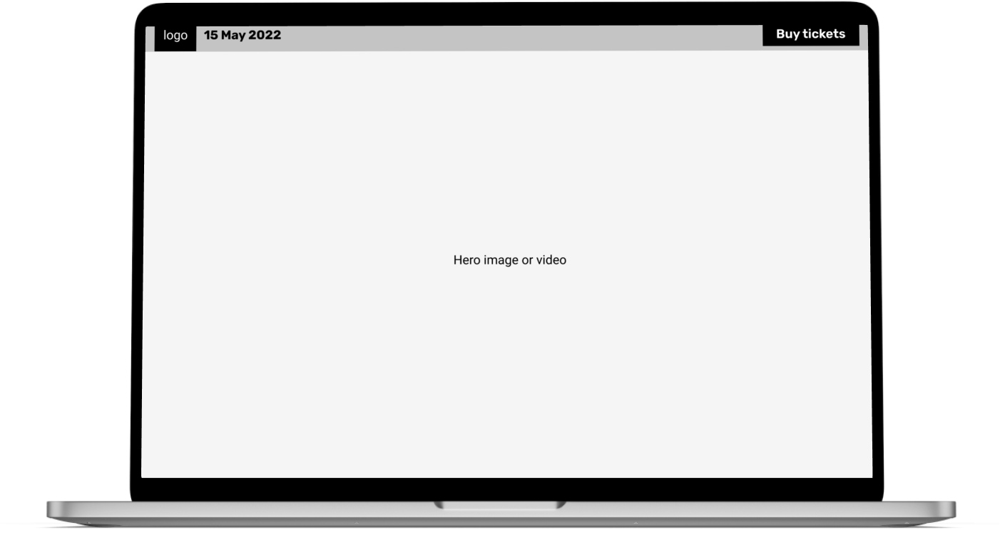
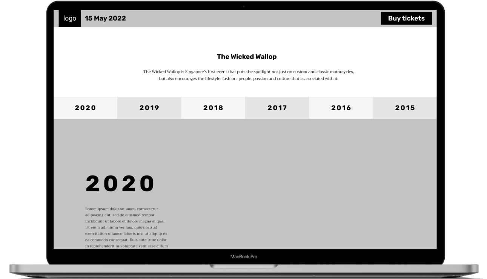
Mockups
Once the client gave the green light on the wireframes, I simply followed the structure of the lofi design and added typography, images and colours. To capture the lively and energetic atmosphere of The Wicked Wallop's events, I carefully selected the most vibrant and exciting images from their extensive library. Additionally, I used a bright red colour for the "Buy Tickets" CTA to make it easily noticeable and draw the user's attention.
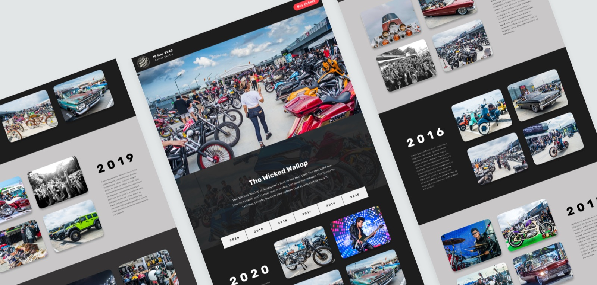
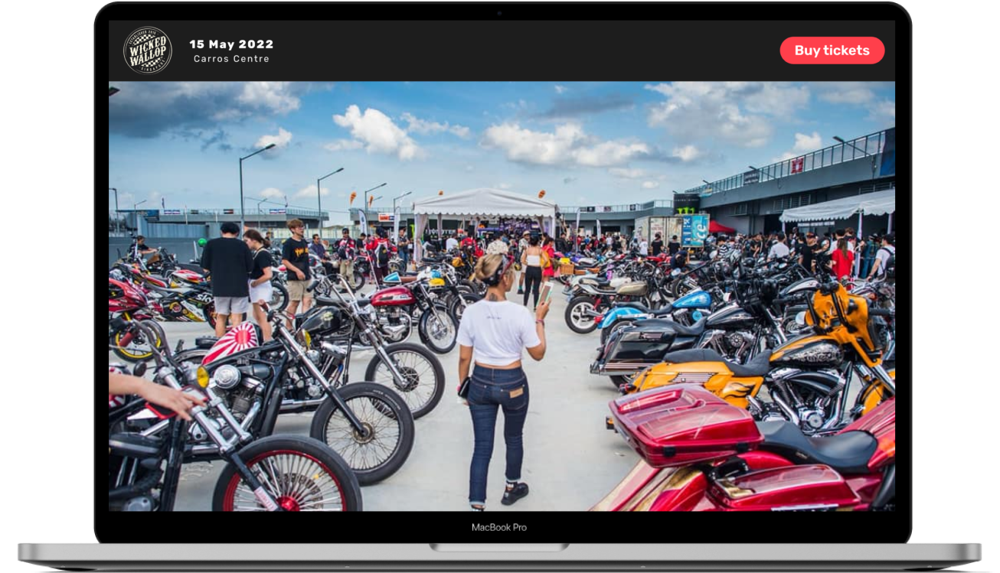
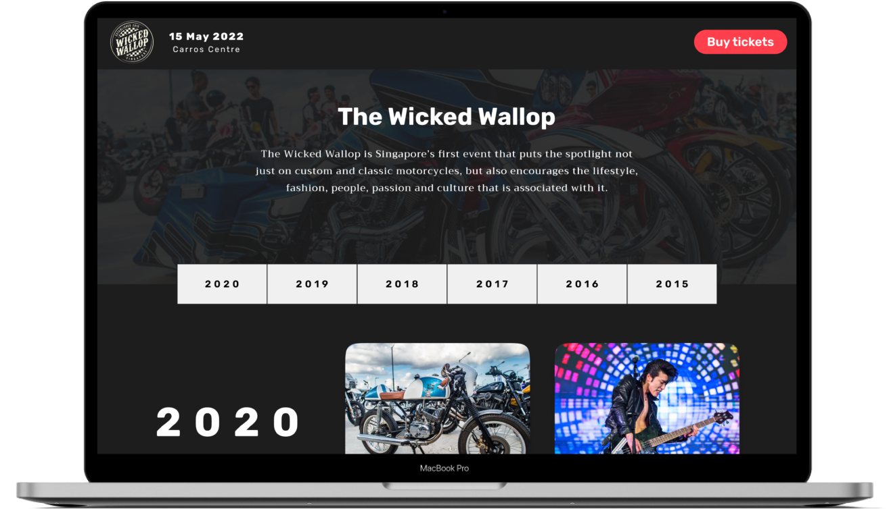
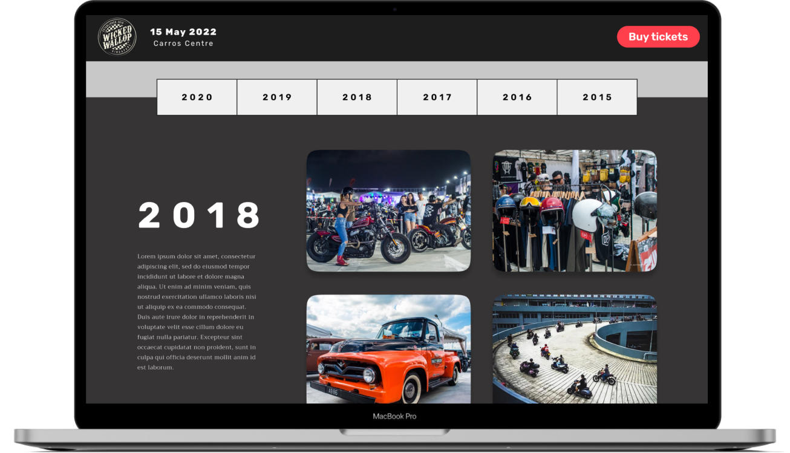
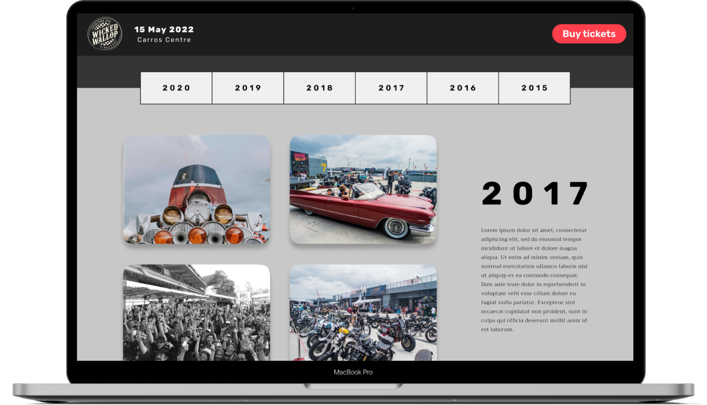
Responsive design
As our users are likely to access our landing page from mobile, I worked on a screen size variation for mobile too. View the high-fidelity prototype here:
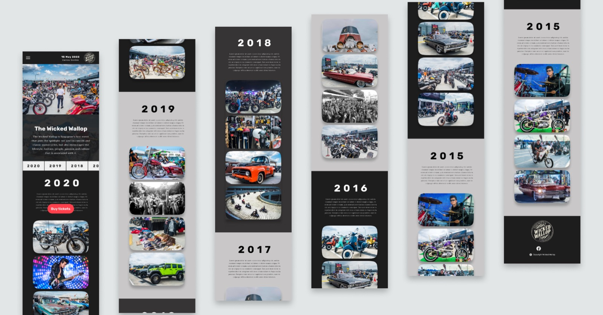
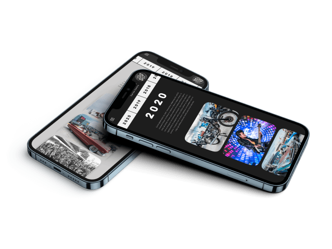
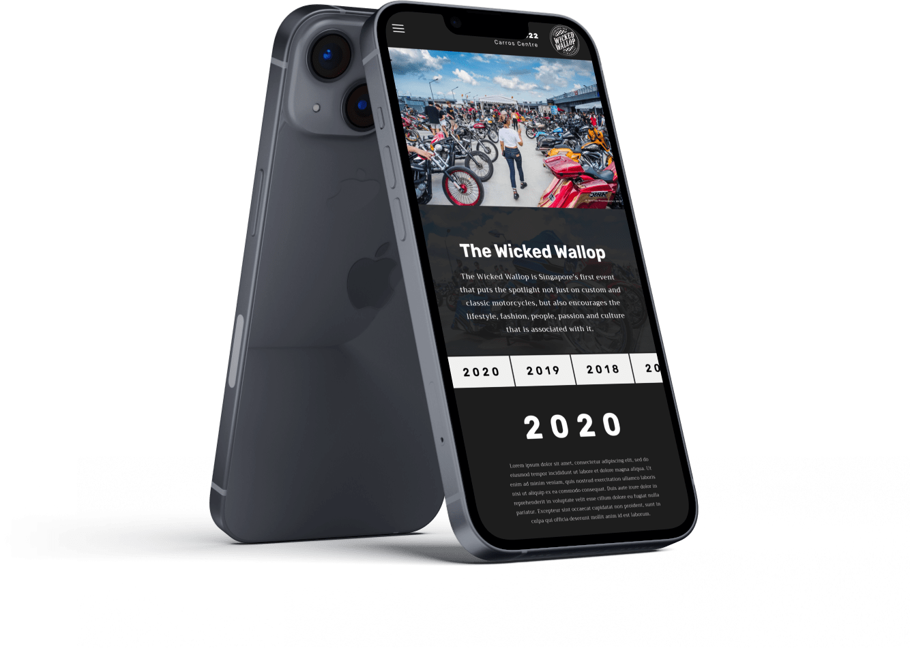